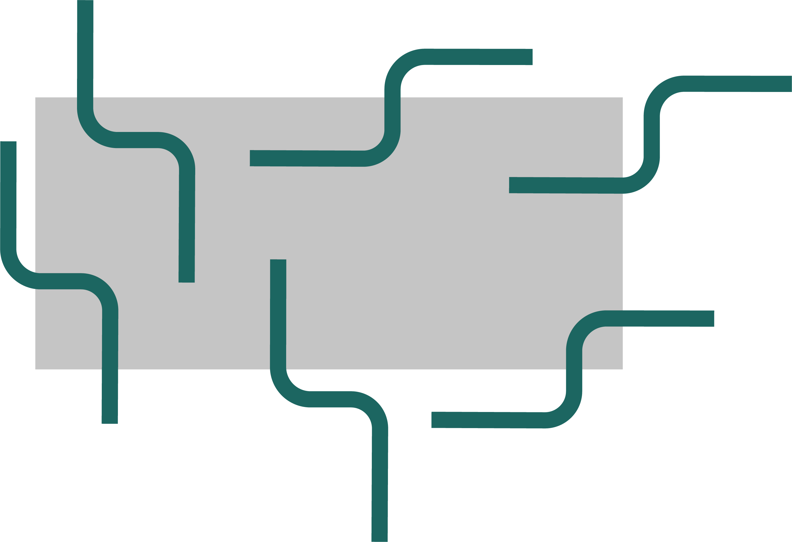
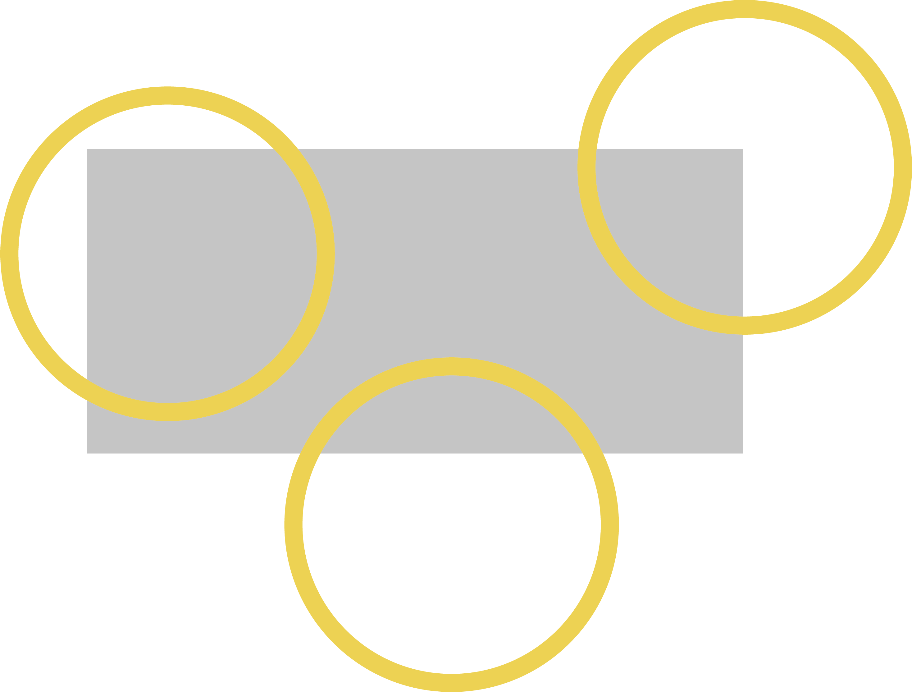

grafische elementen
gebruik
Om de branding nog sterker te maken is er gekozen voor een paar herkenbare grafische elementen. Deze komen regelmatig terug om bepaalde toepassingen een extra dynamiek te geven.
Deze gaan we op een heel simpele manier gebruiken. We zomen het logo in en gebruik ofwel de cirkel ofwel de s-vorm uitgezoomd. Dit gebeurt wel steeds aflopend zodat er geen enkel element volledig te zien is. De plaatsing mag ook willekeurig gebeuren. De kleuren die gebruikt worden zijn de huisstijlkleuren en de keuze is hier vrij.
Af en toe worden er ook opgevulde cirkels gebruikt. Deze zullen extra informatie weergeven. Zie deze cirkels als een call to action button.

